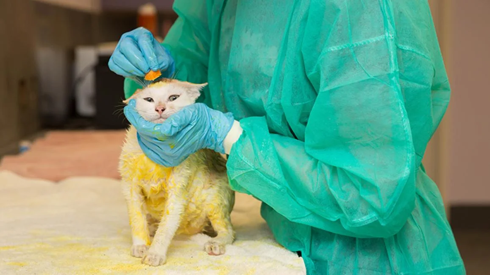
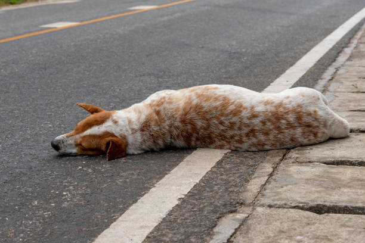

we try to ensure that animals receive the proper care and attention they need. To achieve this we have taken
many steps:...
1. Identification of needs. 2. Resource allocation. 3. Safety protocols. 4. Legal
considerations. 5. Volunteer management.
Support
we at our level had done many things to ensure these noble cause won't stop.Like:...
1. Financial support . 2. Volunteer work. 3. Supplies and equipment. 4. Adoption. 5. Legal
support.
Helping
We are providing all essential support but sometimes we have to rely on the support and assistance of
individuals and groups to carry out our mission of helping animals in need. To achieve this we are doing:...
1. Volunteer recruitment. 2. Outreach programs. 3. Adoption events and partnerships. 4. Training and
education. 5. Recognition and appreciation.
...
...
About Us
some key solutions

we try to ensure that animals receive the proper care and attention they need. To achieve this we have taken many steps:...
1. Identification of needs: It is crucial to identify the needs of animals in rescue situations, such as food, shelter, and medical care.
2. Resource allocation: Proper allocation of resources, such as funding, supplies, and personnel, is necessary to ensure that animals receive the care they need.
3. Safety protocols: Establishing safety protocols for both animals and rescue personnel is crucial to minimize the risk of injury or harm during the rescue process.
4. Legal considerations: It is important to consider legal aspects, such as permits and regulations, to ensure that the rescue operation is carried out in compliance with local laws.
5. Follow-up care: Planning for follow-up care after the rescue operation, including medical care and adoption services, is essential to ensure that animals continue to receive the care they need.
we at our level had done many things to ensure these noble cause won't stop. Like:...
1. Financial support: Financial support can help fund rescue operations and emergency services.
2. Volunteer work: Volunteers are a valuable resource in animal rescue operations, providing care and
support to animals in need, and assisting with transport and other tasks.
3. Supplies and equipment: Donations of food, bedding, toys, and other supplies can help support animal
rescue efforts, as well as the ongoing care of animals in shelters and foster homes.
4. Adoption: Adopting a rescued animal provides a loving home for an animal in need and helps free up
space in shelters and rescue organizations for more animals.
5. Legal support: Lawyers can provide legal support to animal rescue organizations, helping with permits,
contracts, and other legal considerations.

We are providing all essential support but sometimes we have to rely on the support and assistance of
individuals and groups to carry out our mission of helping animals in need. To achieve this we are doing:...
1. Volunteer recruitment: We organises volunteer recruitment drives to enlist individuals who can help
with tasks such as animal care, event planning, fundraising, and outreach efforts.
2. Outreach programs: Often we host outreach programs and events, such as school visits and community
talks, to educate people about animal welfare and the work of the organization.
3. Adoption events and partnerships: We organises adoption events so that animals can find permanent and
loving homes and this will also create some spaces in the rescue center for the new ones.
4. Training and education: We provide training and educational programs to volunteers and staff to ensure
they have the skills and knowledge needed to carry out animal rescue operations effectively and safely.
5. Recognition and appreciation: We often gives recognition and some appreciation for the efforts of
volunteers, donors, and supporters is crucial to maintaining their support and fostering a positive
relationship with the community.
6. Fundraising: Launching fundraising campaigns and events to generate funds for animal rescue operations
and ongoing care for animals.
...
...
Doctors
Doctors are those who always willing to help the needy ones.
Dr. Dipali Sharma
Chief Medical Officer
Singapore General Hospital
Dr. Deepak Chandra
Chief Medical Officer
Singapore General Hospital
Dr. Doli Yadav
Chief Medical Officer
Singapore General Hospital
Dr. Dipali Sharma
Chief Medical Officer
Singapore General Hospital
Dr. Naveen Prashad
Assitant Doctor
PMCH Hospital
Dr. Naveen Prashad
Assitant Doctor
PMCH Hospital
Dr. Deepak Chandra
Chief Medical Officer
Singapore General Hospital
Dr. Naveen Prashad
Assitant Doctor
PMCH Hospital
...
...
Volunteer
Welcome! Anyone who want to connect with us in this journey, we welcome them.
Our Goals:
1. To provide protection, medical care, food & shelter to all the strays in need.
2. To vaccinate & sterilize strays in order to curb the spread of diseases & increase in population.
3. To educate the community about the benefits of stray management & also help implement the same.
Animal Rahat (rahat means “relief” in Hindi) is a unique program that aims to help some of the most neglected animals in the world—the bullocks, donkeys, and other working animals of India.
We are the most trusted wildlife conservation charity organization in India, dedicated to preserve and protect the natural world and its wild habitats. Our team has been fully committed to India's wildlife for the last 20+ years.
We, at Karma Foundation truly believe that animals are the real victims on earth. They didn't declare war, they don't have weapons and they don't want to destroy humans or impose their religion. Their only “crime” is that they exist. Keeping the ever rising cases of accidents, cruelty, starvation, illnesses and so on, we have built an Intensive Care Unit (ICU), Operation Theatre (OT) & Out Patient Department (OPD) for such animals who suffer each day on the streets of the city.
STRAW India is a registered non-profit organization that works for the welfare of animals through the medium of humane and animal welfare education. Our efforts enable us to significantly influence school students to develop empathy towards people, compassion towards animals and care for the natural world so that they can make a difference and bring about a positive change.
We provide several key programs to achieve our goals: spay/neuter, rabies vaccination, rescue and adoption, street animal feeding, and community education for rabies safety and compassion.
PETA India focuses primarily on the areas in which the greatest numbers of animals suffer the most: in laboratories, in the food industry, in the leather trade, and in the entertainment business. PETA India's investigations, public education efforts, research, animal rescues, legislative work, special events, celebrity involvement, and national media coverage have resulted in countless improvements to the quality of life for animals and have saved countless animals' lives.
...
...
How To Use
Step-1:
Click on the emergency button.
Step-2:
Fill the name.
Step-3:
Fill the location.
Step-4:
You can also fetch location by clicking on 'Get my location'.
Step-5:
Please provide image of injured animal.
Step-6:
Please provide short video ,so that team can understand the situation.
Step-7:
you have to click submit and you are done.
Step-8:
We will provide neccessory information to nearby helping members.
Step-9:
You can also help by registring yourself as helping member